| 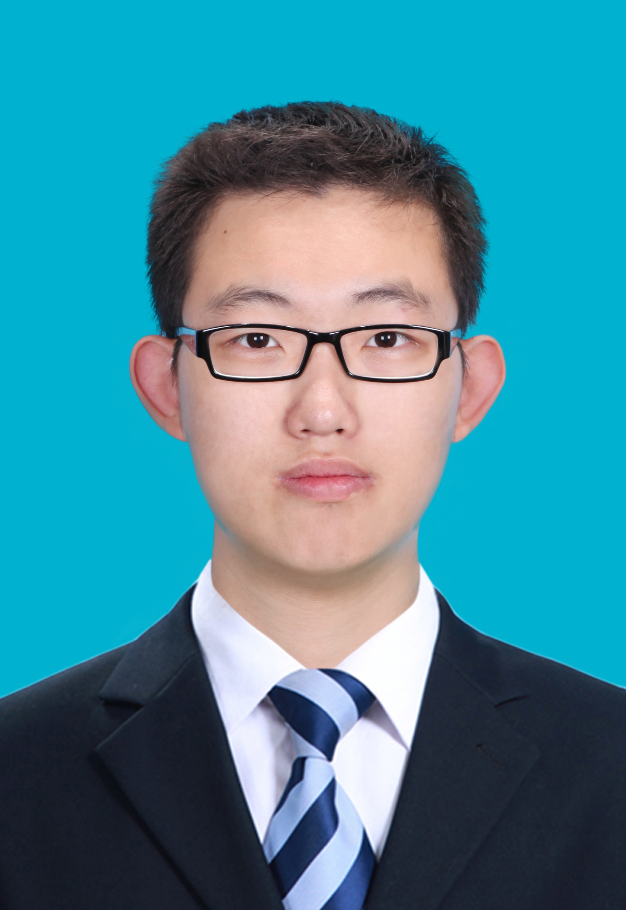 | YANG, Ren |
I am a Doctoral Student (PhD) at the Computer Vision Laboratory, ETH Zurich, Switzerland. I am working on the reasearch topics of learned video compression and quality enhancement, supervised by Prof. Dr. Luc Van Gool and Dr. Radu Timofte. I obtained the M.Sc. degree in 2019 at the MC^2 Lab, Beihang University, P.R. China, under the supervision Prof. Mai Xu, and obtained the M.Sc. degree in 2012 at Beihang University, P.R. China.
I worked as a Research Intern (2018-2019) in the Intelligent Multimedia Group, Microsoft Research, under the supervision of Dr. Xiaoyan Sun and Prof. Dr. Wenjun Zeng.| 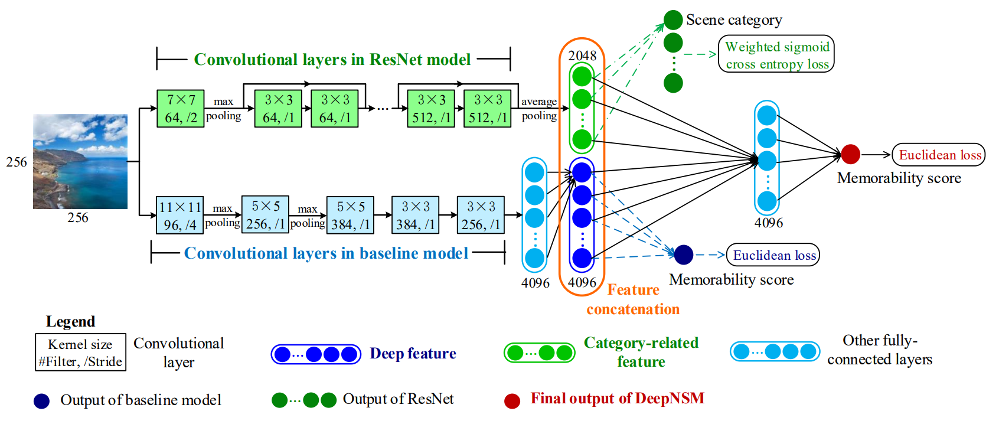 |
Understanding and Predicting the Memorability of Outdoor Natural Scenes |
| 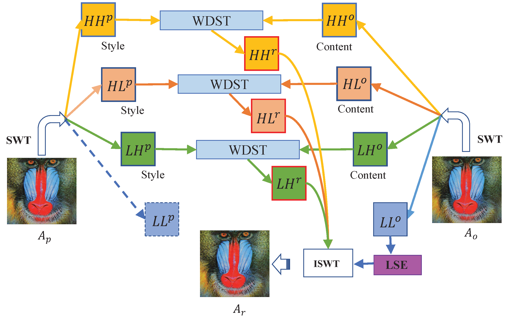 |
Wavelet Domain Style Transfer for an Effective Perception-distortion Tradeoff in Single Image Super-Resolution |
| 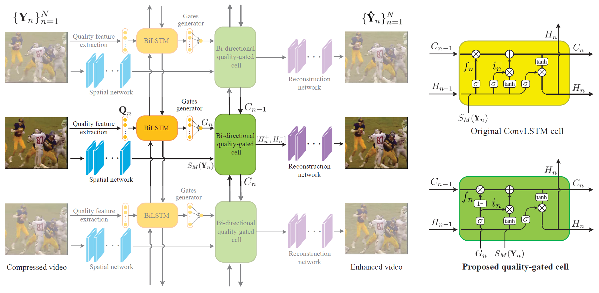 |
Quality-Gated Convolutional LSTM for Enhancing Compressed Video |
| 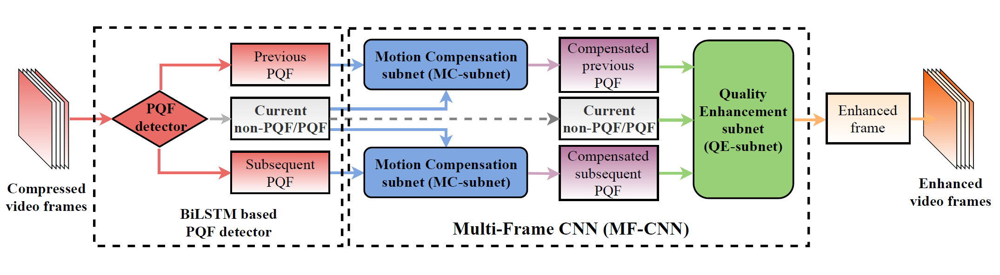 |
MFQE 2.0: A New Approach for Multi-frame Quality Enhancement on Compressed Video |
| 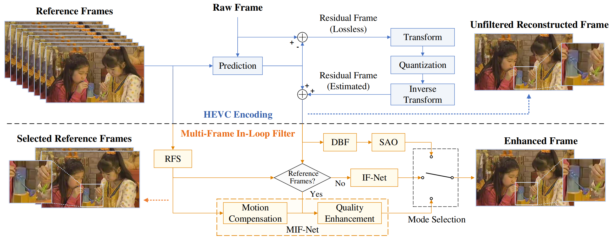 |
A Deep Learning Approach for Multi-Frame In-Loop filter of HEVC |
| 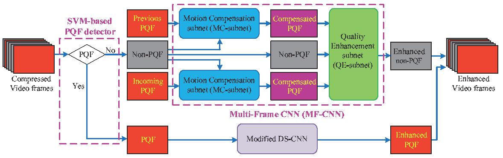 |
Multi-Frame Quality Enhancement for Compressed Video |
| 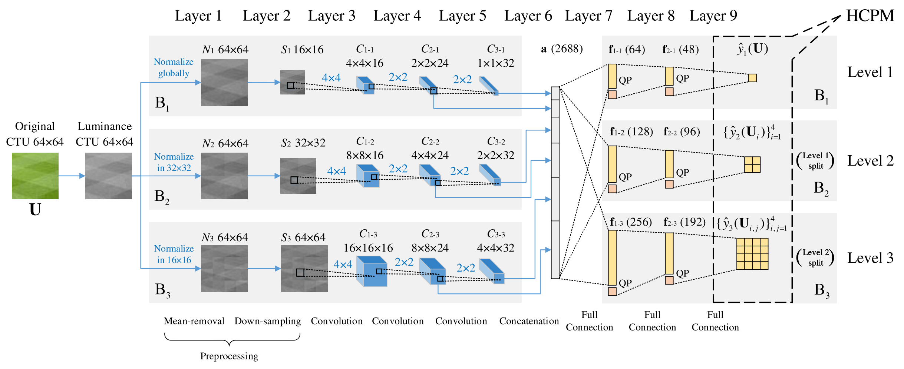 |
Reducing Complexity of HEVC: A Deep Learning Approach |
| 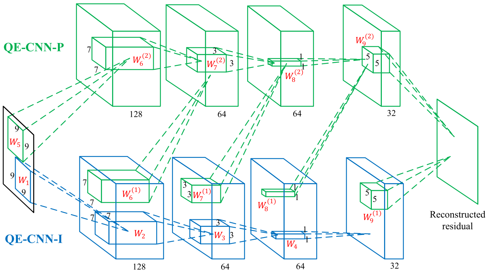 |
Enhancing Quality for HEVC Compressed Videos |
| 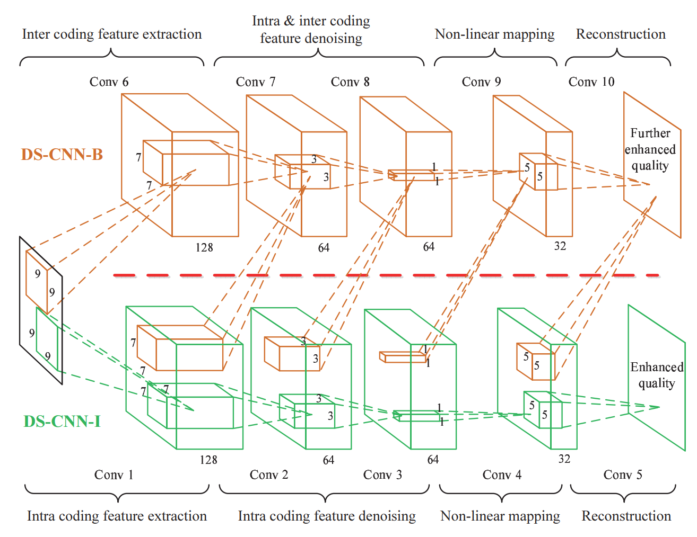 |
Decoder-side HEVC quality enhancement with scalable convolutional neural network |
| 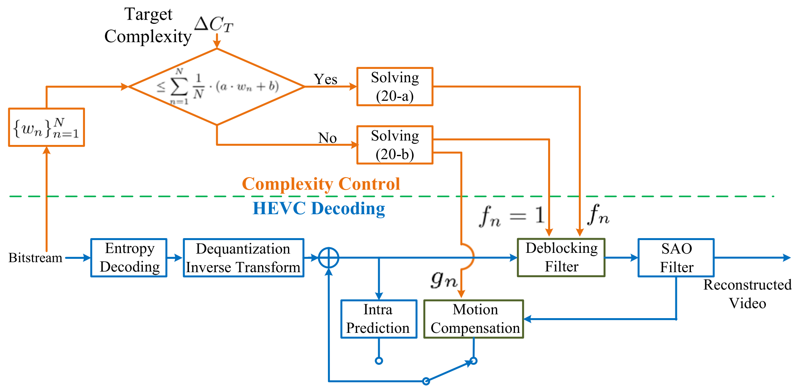 |
Saliency-Guided Complexity Control for HEVC Decoding |
Journal Reviewer: